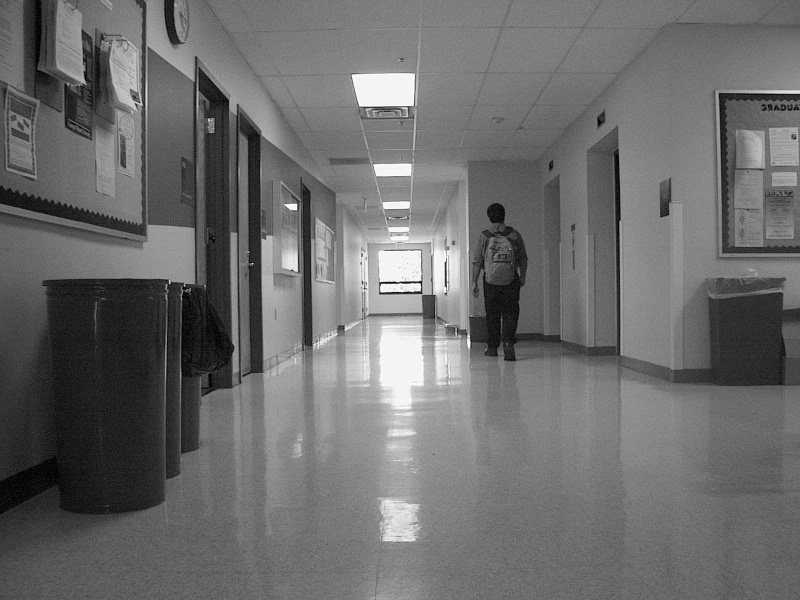
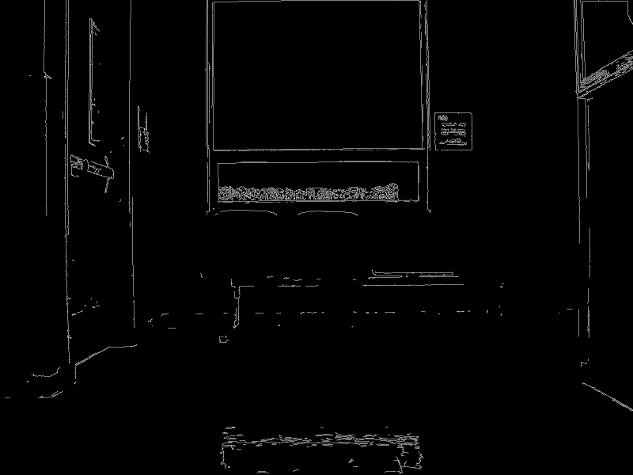

Assignment Report
The 25 images below should cover the requirements for Homewrok #2. I began by reading in the 5 original images as grayscale(as shown in the second set of 5 images). Next I used Canny Edge Detector(like last time) to find the edges in each image. These are displayed in the third set of 5 images. I kept all of the same settings, so this should look pretty familiar.
The fourth set of 5 images show the Standard Hough Transform lines drawn onto their respective images. I thought I'd change things up just a little, so I modified the colors of the lines between each image. Getting it to work properly was quite a hassle at first, because the documentation and example I found online gives incomplete information about how the line output is arranged. cv2.HoughLines() returns an array of arrays(all length 1), and those arrays each contain a pair, which represents rho and theta. Why they added the redundant layer of arrays, I will never understand. However, since it only returns (rho,theta), a few calculations needed to be performed. I just kept the basic structure that was given in the example.
The final set of 5 images show the Probabilistic Hough Transform lines drawn onto their respective images. This one was much simpler to output than regular Hough Transform, because the (x1,y1) and (x2,y2) values are already calculated. I kept the same Minimum Line Lengths and Maximum Line Gap values given in the example so that part wasn't too bad. HoughLinesP() returns the same general structure as HoughLines(), except this one is an array of arrays(each length 1), that contain arrays holding the values (x1, y1, x2, y2).
Original Images:
Main Hall 4013

Main Hall 4021

Main Hall 4034
Main Hall 4069
Main Hall 4089
Grayscale Images:
Grayscale Main Hall 4013
Grayscale Main Hall 4021
Grayscale Main Hall 4034
Grayscale Main Hall 4069
Grayscale Main Hall 4089
Canny Images:
Canny Main Hall 4013
Canny Main Hall 4021
Canny Main Hall 4034
Canny Main Hall 4069
Canny Main Hall 4089
Standard Hough Line Images:
Standard Hough Lines on Main Hall 4013
Standard Hough Lines on Main Hall 4021
Standard Hough Lines on Main Hall 4034
Standard Hough Lines on Main Hall 4069
Standard Hough Lines on Main Hall 4089
Probabilistic Hough Line Images:
Probabilistic Hough Lines on Main Hall 4013
Probabilistic Hough Lines on Main Hall 4021
Probabilistic Hough Lines on Main Hall 4034
Probabilistic Hough Lines on Main Hall 4069